# Librerías, datasets y procesamiento previo
library(readr)
library(dplyr)
library(fcaR)
library(magrittr)
library(ggplot2)
library(psych)
library(arules)
datos <- read_csv("train.csv")
View(datos)
datos_test <- read_csv("test.csv")
View(datos_test)
datos <- rename(datos, profile_pic=`profile pic`, `nums/length_username` = `nums/length username`, fullname_words=`fullname words`, `nums/length_fullname` = `nums/length fullname`, description_length=`description length`, external_URL=`external URL`, posts=`#posts`, followers=`#followers`, follows=`#follows`)
datos_test <- rename(datos_test, profile_pic=`profile pic`, `nums/length_username` = `nums/length username`, fullname_words=`fullname words`, `nums/length_fullname` = `nums/length fullname`, description_length=`description length`, external_URL=`external URL`, posts=`#posts`, followers=`#followers`, follows=`#follows`)5 Regresión
5.1 Regresión
Una vez visto el Formal Concept Analysis, ahora es el turno de la regresión: analizar la relación entre una variable dependiente (variable objetivo o respuesta) y ciertas variables independientes (variable predictora o explicativa).
5.1.1 Modelos multi-variable
En nuestro caso, la variable dependiente será ‘fake’, y trataremos de encontrar el mejor modelo para explicar la variable dependiente.
Primero, realicemos un plot de los datos para intentar encontrar relaciones visuales:
plot(datos)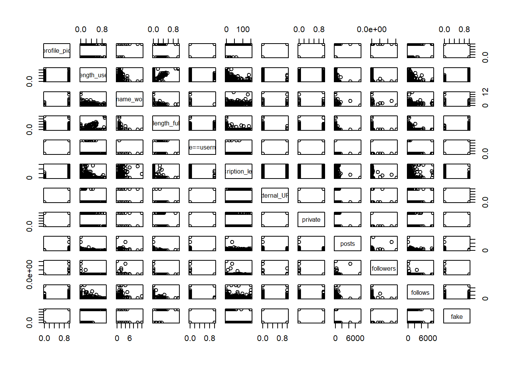
Se observa que, lógicamente, es imposible extraer información visual de la relación entre ‘fake’ y las demás variables binarias, ya que aparecen 4 puntos en las esquinas (las 4 posibles combinaciones). Sin embargo, las variables numéricas son más reveladoras. Por ejemplo, se nota que en posts y followers hay más cuentas fake cuando estas variables tienen valores bajos.
Podemos osbervar un mejor gráfico quitando las variables binarias:
pairs.panels(datos[c("profile_pic","nums/length_username","fullname_words","nums/length_fullname","description_length","posts","followers","follows","fake")])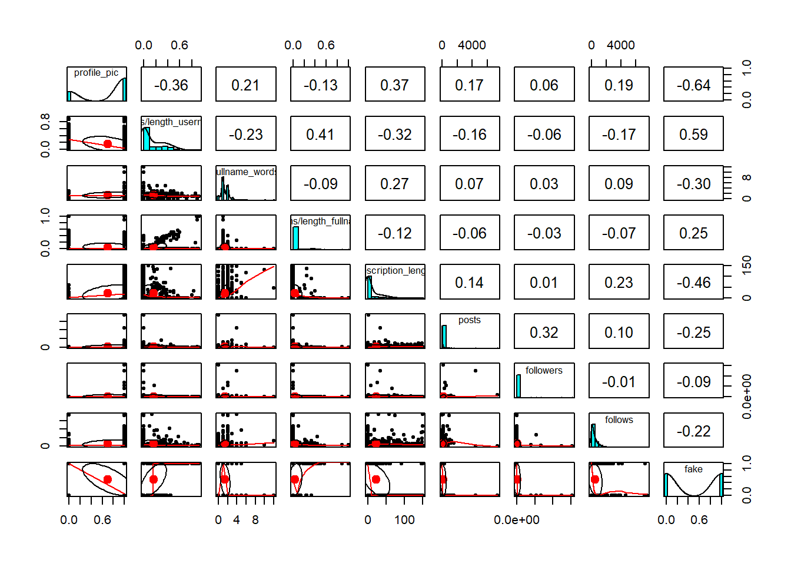
Queda claro que es necesario un análisis numérico. Comencemos por construir un modelo lineal con todas las variables posibles como independientes:
modelo1 <- lm(fake ~ .,
data = datos)
summary(modelo1)
Call:
lm(formula = fake ~ ., data = datos)
Residuals:
Min 1Q Median 3Q Max
-0.73096 -0.23729 -0.06653 0.24048 1.01052
Coefficients:
Estimate Std. Error t value Pr(>|t|)
(Intercept) 7.931e-01 3.798e-02 20.880 < 2e-16 ***
profile_pic -4.380e-01 3.345e-02 -13.094 < 2e-16 ***
`nums/length_username` 8.062e-01 7.522e-02 10.718 < 2e-16 ***
fullname_words -3.354e-02 1.333e-02 -2.516 0.012142 *
`nums/length_fullname` -2.775e-02 1.212e-01 -0.229 0.818988
`name==username` 2.241e-01 7.641e-02 2.933 0.003498 **
description_length -1.510e-03 4.342e-04 -3.478 0.000544 ***
external_URL -1.542e-01 4.800e-02 -3.213 0.001390 **
private -9.459e-03 2.843e-02 -0.333 0.739459
posts -9.094e-05 3.570e-05 -2.547 0.011120 *
followers -9.960e-09 1.539e-08 -0.647 0.517743
follows -1.850e-05 1.499e-05 -1.235 0.217530
---
Signif. codes: 0 '***' 0.001 '**' 0.01 '*' 0.05 '.' 0.1 ' ' 1
Residual standard error: 0.3166 on 564 degrees of freedom
Multiple R-squared: 0.6074, Adjusted R-squared: 0.5998
F-statistic: 79.33 on 11 and 564 DF, p-value: < 2.2e-16Analicemos la salida:
- Un intercept de 0,7931 indica que ese es el valor medio de la variable dependiente (‘fake’) cuando las variables independientes son cero.
- profile_pic: es muy significativa, con el valor estimado negativo, es decir, tener una foto de perfil disminuye la probabilidad de ser una cuenta falsa.
- nums/length_username: es muy significativa, con un valor estimado de positivo, es decir, un mayor ratio de caracteres numéricos en el nombre de usuario aumenta la probabilidad de ser una cuenta falsa.
- fullname_words: es algo significativa, con un valor estimado negativo, es decir, un mayor número de palabras en el nombre completo disminuye ligeramente la probabilidad de ser una cuenta falsa.
- nums/length_fullname: no es significativa. Su variación no influye notablemente en la probabilidad de que la cuenta sea falsa.
- name==username: es significativa, con un valor estimado positivo, es decir, si el nombre completo y el nombre de usuario son iguales, aumenta la probabilidad de ser una cuenta falsa.
- description_length: es muy significativa, con un valor estimado negativo, es decir, una mayor longitud de la descripción disminuye la probabilidad de ser una cuenta falsa.
- external_URL: es significativa, con un valor estimado negativo, es decir, tener una URL externa disminuye la probabilidad de ser una cuenta falsa.
- private: no es significativa. Su variación no influye notablemente en la probabilidad de que la cuenta sea falsa.
- posts: es significativa, con un valor estimado negativo, es decir, un mayor número de publicaciones disminuye la probabilidad de ser una cuenta falsa.
- followers: no es significativa. Su variación no influye notablemente en la probabilidad de que la cuenta sea falsa.
- follows: no es significativa. Su variación no influye notablemente en la probabilidad de que la cuenta sea falsa.
Esta información nos será útil para la construcción de modelos útiles, que tengan en cuenta las variables más significativas.
Probemos a construir un modelo lineal que deseche las variables no significativas:
modelo2 <- lm(fake ~ profile_pic + `nums/length_username` + fullname_words + `name==username` + description_length + external_URL + posts,
data = datos)
summary(modelo2)
Call:
lm(formula = fake ~ profile_pic + `nums/length_username` + fullname_words +
`name==username` + description_length + external_URL + posts,
data = datos)
Residuals:
Min 1Q Median 3Q Max
-0.74953 -0.24241 -0.05836 0.23371 1.02834
Coefficients:
Estimate Std. Error t value Pr(>|t|)
(Intercept) 7.843e-01 3.577e-02 21.926 < 2e-16 ***
profile_pic -4.444e-01 3.267e-02 -13.603 < 2e-16 ***
`nums/length_username` 8.084e-01 6.861e-02 11.783 < 2e-16 ***
fullname_words -3.353e-02 1.326e-02 -2.528 0.011728 *
`name==username` 2.157e-01 7.265e-02 2.969 0.003116 **
description_length -1.553e-03 4.283e-04 -3.625 0.000315 ***
external_URL -1.528e-01 4.747e-02 -3.219 0.001359 **
posts -9.923e-05 3.369e-05 -2.945 0.003360 **
---
Signif. codes: 0 '***' 0.001 '**' 0.01 '*' 0.05 '.' 0.1 ' ' 1
Residual standard error: 0.316 on 568 degrees of freedom
Multiple R-squared: 0.606, Adjusted R-squared: 0.6012
F-statistic: 124.8 on 7 and 568 DF, p-value: < 2.2e-16Expliquemos los resultados generales y la mejora de este modelo con respecto al anterior:
- Residual Standard Error: el error estándar residual mide la dispersión de los residuos. Una disminución en el segundo modelo (0,316) indica una ligera mejora en la precisión de las predicciones del modelo simplificado.
- Multiple R-squared: el R-cuadrado múltiple mide la proporción de la variabilidad en la variable dependiente que es explicada por las variables independientes. Ambos modelos tienen valores similares, con una ligera disminución en el segundo modelo (0,606), lo que indica que se ha perdido ligeramente esa capacidad explicativa de las variables independientes.
- Adjusted R-squared: el R-cuadrado ajustado tiene en cuenta el número de variables en el modelo y penaliza la inclusión de variables irrelevantes. El aumento en el R-cuadrado ajustado en el segundo modelo (0,6012) sugiere que el modelo simplificado es más eficiente al explicar la variabilidad de la variable dependiente con menos variables.
- F-Statistic: la F-estadística mide la relación entre la variabilidad explicada y la variabilidad no explicada del modelo. Un valor más alto en el segundo modelo (124,8) indica que el modelo simplificado tiene un ajuste global mejor y es más significativo.
- p-value: el valor p indica la significancia general del modelo. En ambos casos, el valor p es extremadamente pequeño, lo que significa que ambos modelos son altamente significativos.
Probemos un modelo en el que las variables con mayor nivel de significancia estén al cuadrado:
modelo3 <- lm(fake ~ I(profile_pic^2) + I(`nums/length_username`^2) + fullname_words + `name==username` + I(description_length^2) + external_URL + posts,
data = datos)
summary(modelo3)
Call:
lm(formula = fake ~ I(profile_pic^2) + I(`nums/length_username`^2) +
fullname_words + `name==username` + I(description_length^2) +
external_URL + posts, data = datos)
Residuals:
Min 1Q Median 3Q Max
-0.88443 -0.28449 -0.03917 0.14543 0.91792
Coefficients:
Estimate Std. Error t value Pr(>|t|)
(Intercept) 9.009e-01 3.437e-02 26.214 < 2e-16 ***
I(profile_pic^2) -5.140e-01 3.351e-02 -15.337 < 2e-16 ***
I(`nums/length_username`^2) 9.430e-01 1.062e-01 8.877 < 2e-16 ***
fullname_words -4.636e-02 1.400e-02 -3.312 0.000986 ***
`name==username` 2.364e-01 7.722e-02 3.061 0.002311 **
I(description_length^2) -5.231e-06 3.480e-06 -1.503 0.133362
external_URL -2.288e-01 4.973e-02 -4.601 5.2e-06 ***
posts -1.181e-04 3.572e-05 -3.305 0.001010 **
---
Signif. codes: 0 '***' 0.001 '**' 0.01 '*' 0.05 '.' 0.1 ' ' 1
Residual standard error: 0.3358 on 568 degrees of freedom
Multiple R-squared: 0.5553, Adjusted R-squared: 0.5498
F-statistic: 101.3 on 7 and 568 DF, p-value: < 2.2e-16Este modelo es peor que los anteriores en todos los parámetros generales.
Probemos con un modelo lineal cuyas variables independientes son únicamente las 3 que en el primer modelo tenían más significancia:
modelo4 <- lm(fake ~ profile_pic + `nums/length_username` + description_length,
data = datos)
summary(modelo4)
Call:
lm(formula = fake ~ profile_pic + `nums/length_username` + description_length,
data = datos)
Residuals:
Min 1Q Median 3Q Max
-0.71251 -0.24060 -0.09454 0.25287 1.08855
Coefficients:
Estimate Std. Error t value Pr(>|t|)
(Intercept) 0.7462368 0.0317943 23.471 < 2e-16 ***
profile_pic -0.4758359 0.0331911 -14.336 < 2e-16 ***
`nums/length_username` 0.8667753 0.0697244 12.431 < 2e-16 ***
description_length -0.0024090 0.0003966 -6.075 2.27e-09 ***
---
Signif. codes: 0 '***' 0.001 '**' 0.01 '*' 0.05 '.' 0.1 ' ' 1
Residual standard error: 0.3255 on 572 degrees of freedom
Multiple R-squared: 0.5791, Adjusted R-squared: 0.5769
F-statistic: 262.4 on 3 and 572 DF, p-value: < 2.2e-16Este modelo es el mejor por ahora. Ninguno le supera en los parámetros finales, excepto los 2 primeros modelos en el error.
Probemos a elevar al cuadrado las dos variables que, en el primer modelo, eran las más significativas:
modelo5 <- lm(fake ~ I(profile_pic^2) + I(`nums/length_username`^2) + description_length,
data = datos)
summary(modelo5)
Call:
lm(formula = fake ~ I(profile_pic^2) + I(`nums/length_username`^2) +
description_length, data = datos)
Residuals:
Min 1Q Median 3Q Max
-0.8257 -0.2721 -0.0701 0.1341 1.0911
Coefficients:
Estimate Std. Error t value Pr(>|t|)
(Intercept) 0.8658746 0.0298412 29.016 < 2e-16 ***
I(profile_pic^2) -0.5291041 0.0343600 -15.399 < 2e-16 ***
I(`nums/length_username`^2) 0.9668541 0.1083190 8.926 < 2e-16 ***
description_length -0.0028714 0.0004144 -6.929 1.14e-11 ***
---
Signif. codes: 0 '***' 0.001 '**' 0.01 '*' 0.05 '.' 0.1 ' ' 1
Residual standard error: 0.3437 on 572 degrees of freedom
Multiple R-squared: 0.5308, Adjusted R-squared: 0.5283
F-statistic: 215.7 on 3 and 572 DF, p-value: < 2.2e-16Los resultados empeoran.
Parece difícil mejorar el modelo4. Probemos con un modelo que tenga en cuenta únicamente 2 variables más significativas del modelo1, pero sin cuadrados:
modelo6 <- lm(fake ~ profile_pic + `nums/length_username`,
data = datos)
summary(modelo6)
Call:
lm(formula = fake ~ profile_pic + `nums/length_username`, data = datos)
Residuals:
Min 1Q Median 3Q Max
-0.7170 -0.1838 -0.1838 0.2732 0.8162
Coefficients:
Estimate Std. Error t value Pr(>|t|)
(Intercept) 0.71697 0.03240 22.13 <2e-16 ***
profile_pic -0.53320 0.03280 -16.26 <2e-16 ***
`nums/length_username` 0.95834 0.07018 13.66 <2e-16 ***
---
Signif. codes: 0 '***' 0.001 '**' 0.01 '*' 0.05 '.' 0.1 ' ' 1
Residual standard error: 0.3355 on 573 degrees of freedom
Multiple R-squared: 0.552, Adjusted R-squared: 0.5504
F-statistic: 353 on 2 and 573 DF, p-value: < 2.2e-16El F estadístico mejora, pero los demás parámetros empeoran ligeramente. Aun así, veo este modelo como el mejor, ya que el empeoramiento es muy leve, y el aumento del F estadístico es grande.
5.1.2 Modelos con una variable independiente (con visualización)
Como acabamos de ver, eliminar variables independientes ha generado buenos resultados. Aunque dudo que encontremos un modelo mejor, aprovechemos para realizar modelos con una única variable independiente (probando con todas ellas y visualizando la predicción).
5.1.2.1 Modelo con profile_pic como variable independiente:
modelo7 <- lm(fake ~ profile_pic,
data = datos)
summary(modelo7)
Call:
lm(formula = fake ~ profile_pic, data = datos)
Residuals:
Min 1Q Median 3Q Max
-0.98837 -0.29208 -0.14023 0.01163 0.70792
Coefficients:
Estimate Std. Error t value Pr(>|t|)
(Intercept) 0.98837 0.02943 33.58 <2e-16 ***
profile_pic -0.69629 0.03514 -19.81 <2e-16 ***
---
Signif. codes: 0 '***' 0.001 '**' 0.01 '*' 0.05 '.' 0.1 ' ' 1
Residual standard error: 0.386 on 574 degrees of freedom
Multiple R-squared: 0.4062, Adjusted R-squared: 0.4051
F-statistic: 392.6 on 1 and 574 DF, p-value: < 2.2e-16El F estadístico mejora, pero los demás parámetros empeoran considerablemente.
Veamos la predicción:
datos %>%
ggplot(aes(x=profile_pic, y=fake)) +
geom_point() +
geom_line(aes(x=profile_pic, y=predict(modelo7),
color="red"))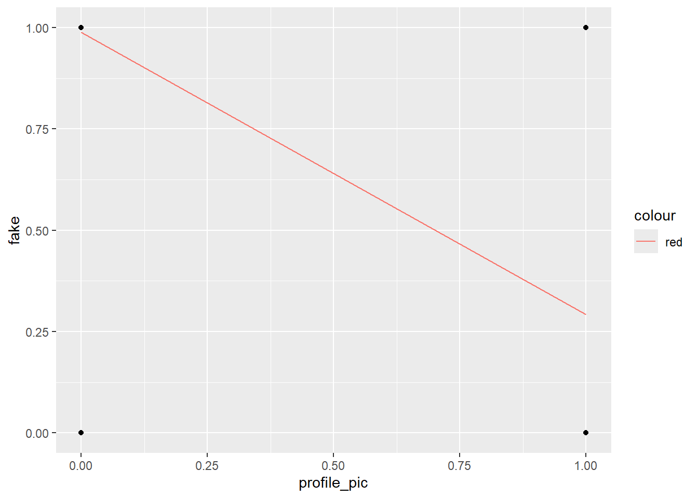
Sin foto de perfil, hay más probabilidad de que la cuenta sea falsa.
5.1.2.2 Modelo con nums/length_username como variable independiente:
modelo8 <- lm(fake ~ `nums/length_username`,
data = datos)
summary(modelo8)
Call:
lm(formula = fake ~ `nums/length_username`, data = datos)
Residuals:
Min 1Q Median 3Q Max
-0.8931 -0.2749 -0.2749 0.3130 0.7251
Coefficients:
Estimate Std. Error t value Pr(>|t|)
(Intercept) 0.27494 0.02127 12.93 <2e-16 ***
`nums/length_username` 1.37368 0.07894 17.40 <2e-16 ***
---
Signif. codes: 0 '***' 0.001 '**' 0.01 '*' 0.05 '.' 0.1 ' ' 1
Residual standard error: 0.4052 on 574 degrees of freedom
Multiple R-squared: 0.3454, Adjusted R-squared: 0.3442
F-statistic: 302.8 on 1 and 574 DF, p-value: < 2.2e-16Veamos la predicción:
datos %>%
ggplot(aes(x=`nums/length_username`, y=fake)) +
geom_point() +
geom_line(aes(x=`nums/length_username`, y=predict(modelo8),
color="red"))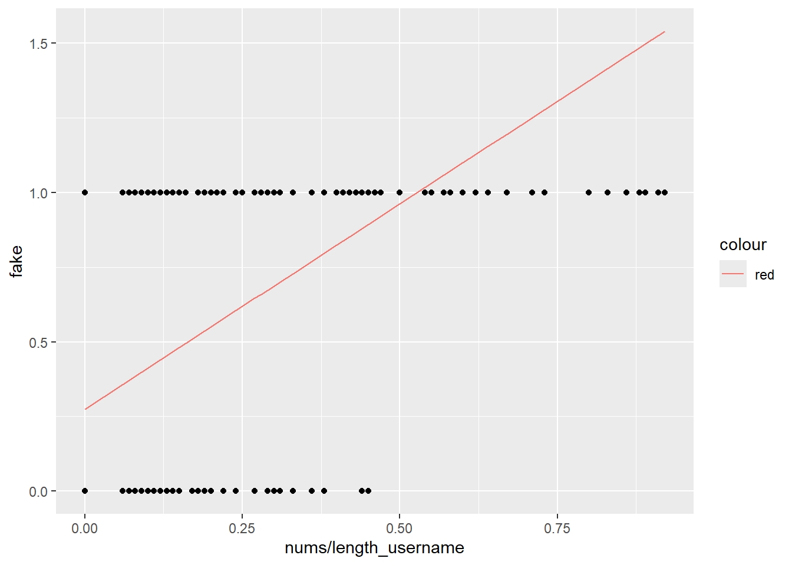
Con valores bajos de este ratio es menos probable que la cuenta sea falsa.
5.1.2.3 Modelo con fullname_words como variable independiente:
modelo9 <- lm(fake ~ fullname_words,
data = datos)
summary(modelo9)
Call:
lm(formula = fake ~ fullname_words, data = datos)
Residuals:
Min 1Q Median 3Q Max
-0.7074 -0.4233 0.2926 0.4346 1.0029
Coefficients:
Estimate Std. Error t value Pr(>|t|)
(Intercept) 0.70741 0.03408 20.760 < 2e-16 ***
fullname_words -0.14205 0.01894 -7.501 2.42e-13 ***
---
Signif. codes: 0 '***' 0.001 '**' 0.01 '*' 0.05 '.' 0.1 ' ' 1
Residual standard error: 0.478 on 574 degrees of freedom
Multiple R-squared: 0.08928, Adjusted R-squared: 0.08769
F-statistic: 56.27 on 1 and 574 DF, p-value: 2.418e-13Veamos la predicción:
datos %>%
ggplot(aes(x=fullname_words, y=fake)) +
geom_point() +
geom_line(aes(x=fullname_words, y=predict(modelo9),
color="red"))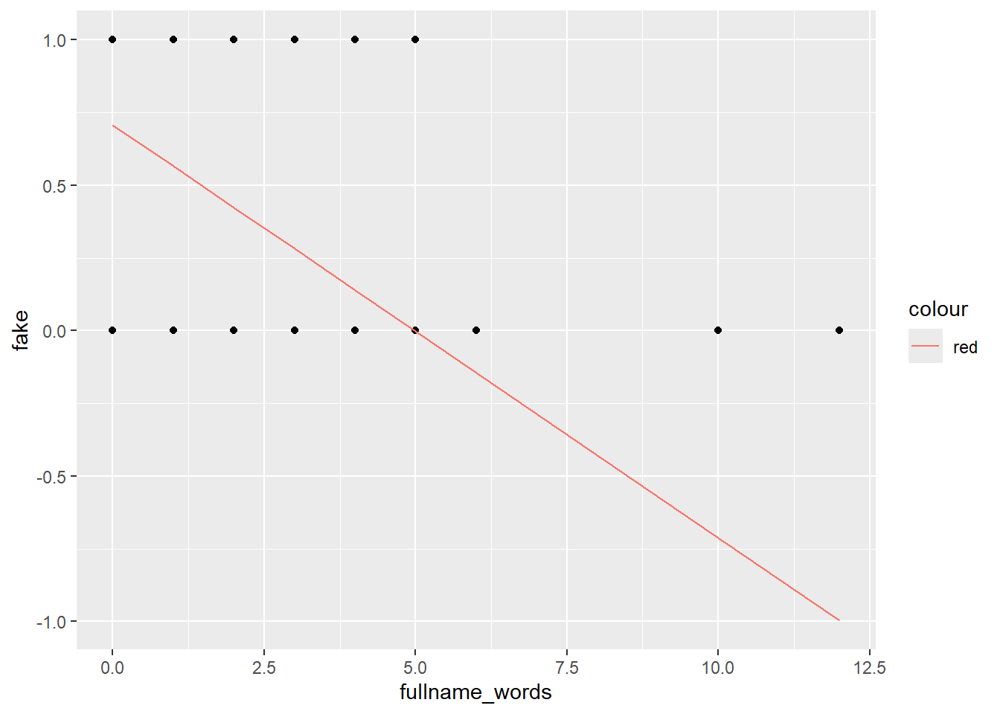
Con mayores bajos de fullname_words es más probable que la cuenta sea falsa.
5.1.2.4 Modelo con name==username como variable independiente:
modelo10 <- lm(fake ~ `name==username`,
data = datos)
summary(modelo10)
Call:
lm(formula = fake ~ `name==username`, data = datos)
Residuals:
Min 1Q Median 3Q Max
-0.9500 -0.4838 -0.2169 0.5162 0.5162
Coefficients:
Estimate Std. Error t value Pr(>|t|)
(Intercept) 0.48381 0.02093 23.12 < 2e-16 ***
`name==username` 0.46619 0.11232 4.15 3.82e-05 ***
---
Signif. codes: 0 '***' 0.001 '**' 0.01 '*' 0.05 '.' 0.1 ' ' 1
Residual standard error: 0.4935 on 574 degrees of freedom
Multiple R-squared: 0.02914, Adjusted R-squared: 0.02745
F-statistic: 17.23 on 1 and 574 DF, p-value: 3.821e-05Veamos la predicción:
datos %>%
ggplot(aes(x=`name==username`, y=fake)) +
geom_point() +
geom_line(aes(x=`name==username`, y=predict(modelo10),
color="red"))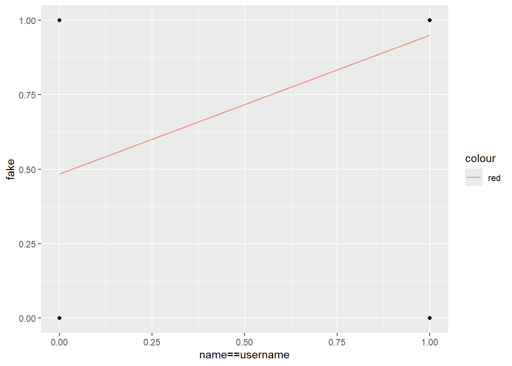
Cuando la coincidencia de fullname y username está presente, es más probable que la cuenta sea falsa.
5.1.2.5 Modelo con description_length como variable independiente:
modelo11 <- lm(fake ~ description_length,
data = datos)
summary(modelo11)
Call:
lm(formula = fake ~ description_length, data = datos)
Residuals:
Min 1Q Median 3Q Max
-0.6384 -0.4732 0.3204 0.3616 1.2730
Coefficients:
Estimate Std. Error t value Pr(>|t|)
(Intercept) 0.6383765 0.0216050 29.55 <2e-16 ***
description_length -0.0061166 0.0004917 -12.44 <2e-16 ***
---
Signif. codes: 0 '***' 0.001 '**' 0.01 '*' 0.05 '.' 0.1 ' ' 1
Residual standard error: 0.4445 on 574 degrees of freedom
Multiple R-squared: 0.2124, Adjusted R-squared: 0.211
F-statistic: 154.8 on 1 and 574 DF, p-value: < 2.2e-16Veamos la predicción:
datos %>%
ggplot(aes(x=description_length, y=fake)) +
geom_point() +
geom_line(aes(x=description_length, y=predict(modelo11),
color="red"))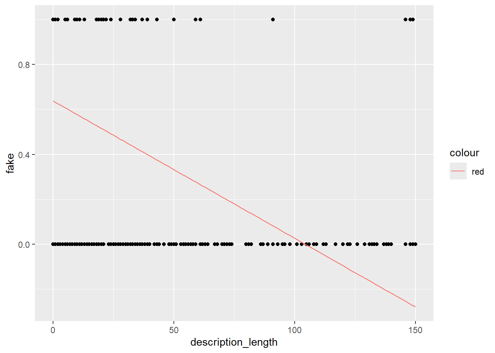
Para valores altos de description_length es menos probable que la cuenta sea falsa.
5.1.2.6 Modelo con external_URL como variable independiente:
modelo12 <- lm(fake ~ external_URL,
data = datos)
summary(modelo12)
Call:
lm(formula = fake ~ external_URL, data = datos)
Residuals:
Min 1Q Median 3Q Max
-0.5658 -0.5658 0.2171 0.4342 0.4342
Coefficients:
Estimate Std. Error t value Pr(>|t|)
(Intercept) 0.56582 0.02069 27.350 <2e-16 ***
external_URL -0.56582 0.06066 -9.328 <2e-16 ***
---
Signif. codes: 0 '***' 0.001 '**' 0.01 '*' 0.05 '.' 0.1 ' ' 1
Residual standard error: 0.4667 on 574 degrees of freedom
Multiple R-squared: 0.1316, Adjusted R-squared: 0.1301
F-statistic: 87.01 on 1 and 574 DF, p-value: < 2.2e-16Veamos la predicción:
datos %>%
ggplot(aes(x=external_URL, y=fake)) +
geom_point() +
geom_line(aes(x=external_URL, y=predict(modelo12),
color="red"))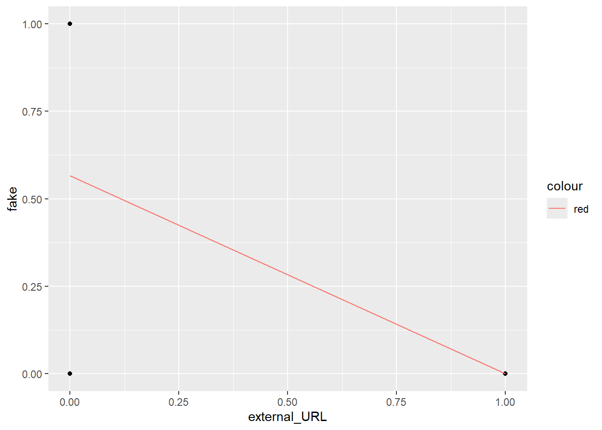
Para valores 1 de URL externa, es menos probable que la cuenta sea falsa.
5.1.2.7 Modelo con private como variable independiente:
modelo13 <- lm(fake ~ private,
data = datos)
summary(modelo13)
Call:
lm(formula = fake ~ private, data = datos)
Residuals:
Min 1Q Median 3Q Max
-0.51124 -0.51124 0.00347 0.48876 0.51818
Coefficients:
Estimate Std. Error t value Pr(>|t|)
(Intercept) 0.51124 0.02654 19.266 <2e-16 ***
private -0.02942 0.04294 -0.685 0.494
---
Signif. codes: 0 '***' 0.001 '**' 0.01 '*' 0.05 '.' 0.1 ' ' 1
Residual standard error: 0.5007 on 574 degrees of freedom
Multiple R-squared: 0.0008172, Adjusted R-squared: -0.0009236
F-statistic: 0.4694 on 1 and 574 DF, p-value: 0.4935Veamos la predicción:
datos %>%
ggplot(aes(x=private, y=fake)) +
geom_point() +
geom_line(aes(x=private, y=predict(modelo13),
color="red"))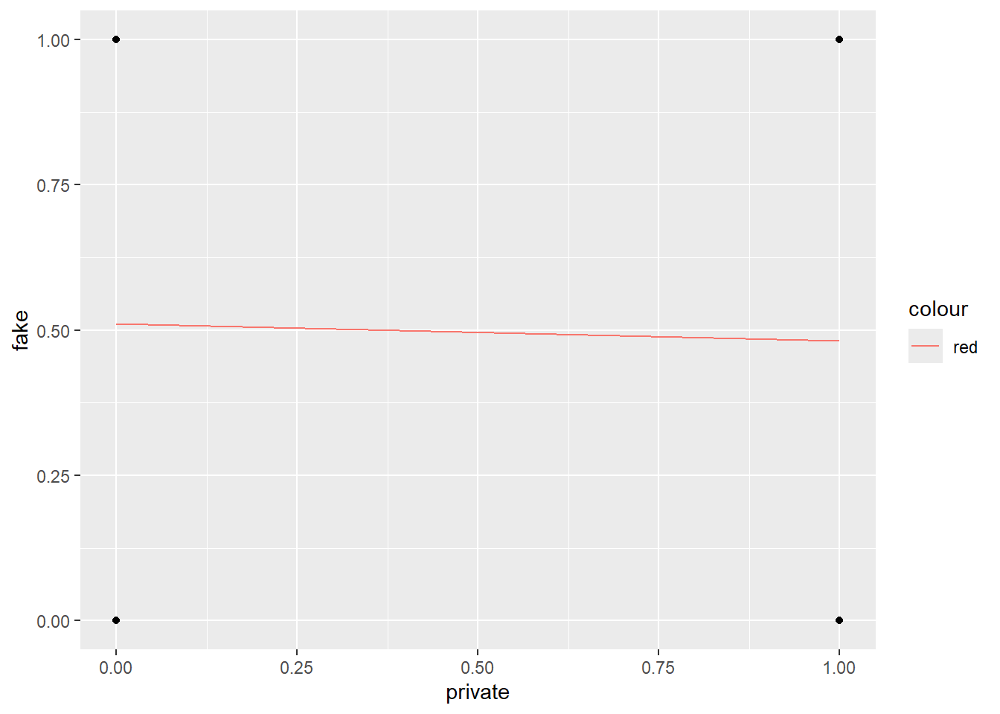
Como ya señalamos en apartados anteriores, la variable private no determina notablemente si es más o menos probable que la cuenta sea falsa. Este gráfico lo respalda.
5.1.2.8 Modelo con posts como variable independiente:
modelo14 <- lm(fake ~ posts,
data = datos)
summary(modelo14)
Call:
lm(formula = fake ~ posts, data = datos)
Residuals:
Min 1Q Median 3Q Max
-0.5328 -0.5102 0.4672 0.4672 1.7238
Coefficients:
Estimate Std. Error t value Pr(>|t|)
(Intercept) 5.328e-01 2.094e-02 25.441 < 2e-16 ***
posts -3.054e-04 5.037e-05 -6.064 2.41e-09 ***
---
Signif. codes: 0 '***' 0.001 '**' 0.01 '*' 0.05 '.' 0.1 ' ' 1
Residual standard error: 0.4856 on 574 degrees of freedom
Multiple R-squared: 0.0602, Adjusted R-squared: 0.05856
F-statistic: 36.77 on 1 and 574 DF, p-value: 2.414e-09Veamos la predicción:
datos %>%
ggplot(aes(x=posts, y=fake)) +
geom_point() +
geom_line(aes(x=posts, y=predict(modelo14),
color="red"))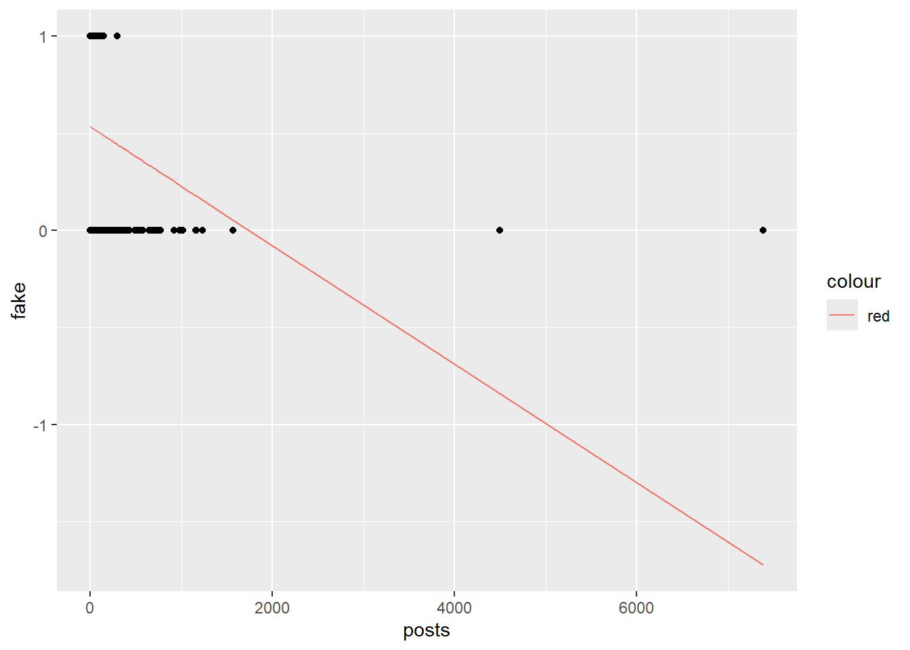
Para valores altos de publicaciones es menos probable que la cuenta sea falsa.
5.1.2.9 Modelo con followers como variable independiente:
modelo15 <- lm(fake ~ followers,
data = datos)
summary(modelo15)
Call:
lm(formula = fake ~ followers, data = datos)
Residuals:
Min 1Q Median 3Q Max
-0.5044 -0.5044 0.3907 0.4956 0.4958
Coefficients:
Estimate Std. Error t value Pr(>|t|)
(Intercept) 5.044e-01 2.087e-02 24.170 <2e-16 ***
followers -5.151e-08 2.285e-08 -2.255 0.0245 *
---
Signif. codes: 0 '***' 0.001 '**' 0.01 '*' 0.05 '.' 0.1 ' ' 1
Residual standard error: 0.4987 on 574 degrees of freedom
Multiple R-squared: 0.008778, Adjusted R-squared: 0.007051
F-statistic: 5.083 on 1 and 574 DF, p-value: 0.02454Veamos la predicción:
datos %>%
ggplot(aes(x=followers, y=fake)) +
geom_point() +
geom_line(aes(x=followers, y=predict(modelo15),
color="red"))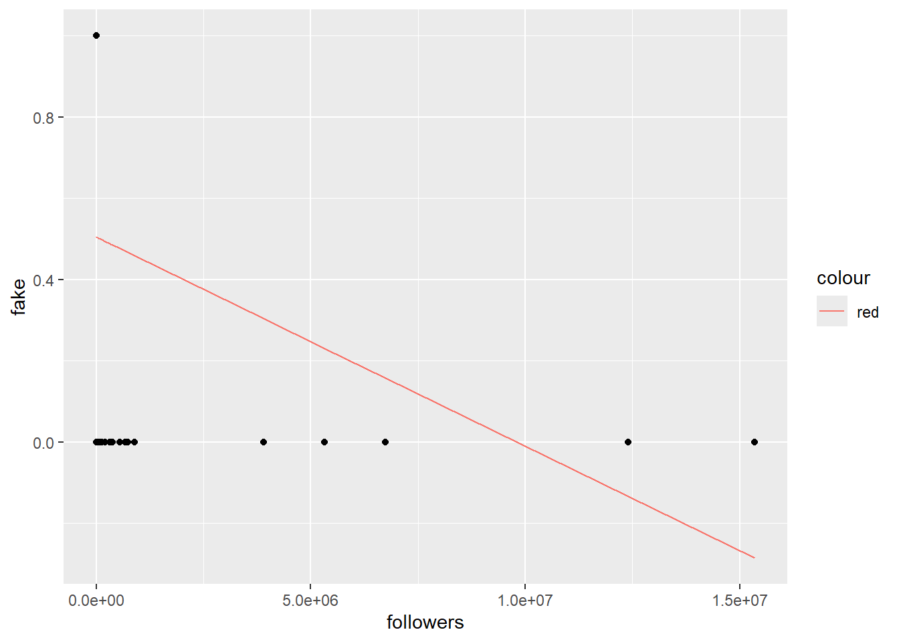
Para valores altos de seguidores es menos probable que la cuenta sea falsa.
5.1.2.10 Modelo con follows como variable independiente:
modelo16 <- lm(fake ~ follows,
data = datos)
summary(modelo16)
Call:
lm(formula = fake ~ follows, data = datos)
Residuals:
Min 1Q Median 3Q Max
-0.5623 -0.5094 0.3973 0.4462 1.3290
Coefficients:
Estimate Std. Error t value Pr(>|t|)
(Intercept) 5.623e-01 2.325e-02 24.185 < 2e-16 ***
follows -1.226e-04 2.217e-05 -5.528 4.92e-08 ***
---
Signif. codes: 0 '***' 0.001 '**' 0.01 '*' 0.05 '.' 0.1 ' ' 1
Residual standard error: 0.488 on 574 degrees of freedom
Multiple R-squared: 0.05055, Adjusted R-squared: 0.0489
F-statistic: 30.56 on 1 and 574 DF, p-value: 4.916e-08Veamos la predicción:
datos %>%
ggplot(aes(x=follows, y=fake)) +
geom_point() +
geom_line(aes(x=follows, y=predict(modelo16),
color="red"))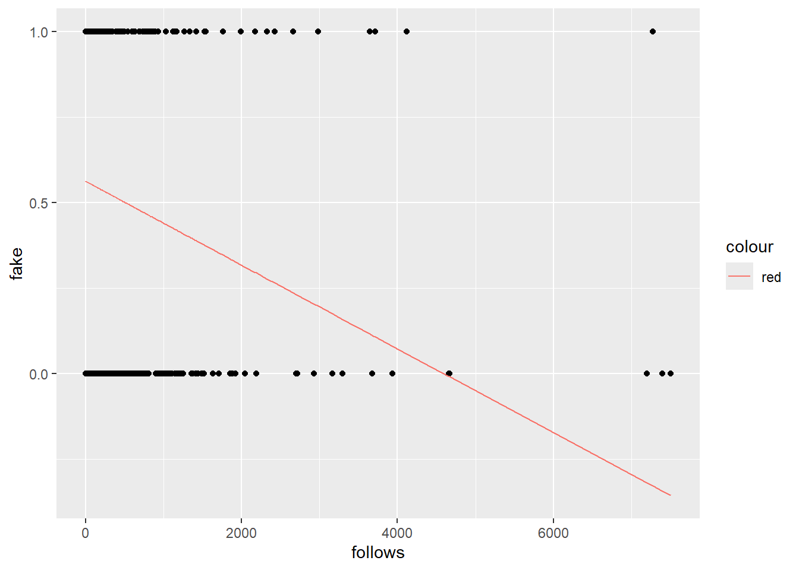
Para valores altos de cuentas seguidas es menos probable que la cuenta sea falsa.
Como hemos podido observar, las conclusiones extraídas coinciden con las conclusiones que hemos estado viendo en los apartados anteriores. La regresión es un mecanismo muy útil y sencillo para predecir valores esperados, tal y como hemos comprobado.
5.1.3 Predicción
Ahora, es momento de predecir la variable dependiente del dataset de test con el mejor modelo encontrado: modelo6.
# Realizar la predicción con el modelo de regresión modelo6
prediccion <- predict(modelo6, newdata = datos_test)
prediccion 1 2 3 4 5 6 7 8
0.5000205 0.1837676 0.1837676 0.1837676 0.6629387 0.1837676 0.1837676 0.1837676
9 10 11 12 13 14 15 16
0.1837676 0.1837676 0.1837676 0.3179355 0.3179355 0.5000205 0.2796018 0.1837676
17 18 19 20 21 22 23 24
0.5000205 0.1837676 0.1837676 0.1837676 0.6629387 0.1837676 0.3946029 0.1837676
25 26 27 28 29 30 31 32
0.2796018 0.1837676 0.1837676 0.1837676 0.5000205 0.1837676 0.1837676 0.1837676
33 34 35 36 37 38 39 40
0.1837676 0.1837676 0.3466857 0.1837676 0.1837676 0.1837676 0.1837676 0.3275189
41 42 43 44 45 46 47 48
0.1837676 0.1837676 0.1837676 0.2700184 0.1837676 0.1837676 0.1837676 0.1837676
49 50 51 52 53 54 55 56
0.1837676 0.1837676 0.1837676 0.1837676 0.1837676 0.1837676 0.1837676 0.1837676
57 58 59 60 61 62 63 64
0.1837676 0.3179355 0.1837676 0.1837676 0.7648889 0.4425200 0.7840558 0.7169718
65 66 67 68 69 70 71 72
0.7169718 0.9278071 0.7169718 0.7169718 0.7169718 1.3111440 0.7169718 1.1194755
73 74 75 76 77 78 79 80
1.3111440 1.1961429 1.0140579 0.9757242 1.1961429 1.4357285 0.5958547 0.9565574
81 82 83 84 85 86 87 88
1.0271087 1.0366922 0.1837676 0.4425200 0.7169718 0.7204392 0.1837676 0.8511397
89 90 91 92 93 94 95 96
0.1837676 1.1961429 0.1837676 0.6629387 1.0332247 0.1837676 0.1837676 0.5479376
97 98 99 100 101 102 103 104
0.7169718 0.5000205 1.0140579 0.8258569 0.5479376 0.5479376 0.7169718 0.6437718
105 106 107 108 109 110 111 112
0.7300226 1.0271087 1.0366922 1.1386424 0.7169718 0.6054381 0.1837676 0.1837676
113 114 115 116 117 118 119 120
1.1386424 0.6150216 0.5000205 0.4616868 0.5671045 0.1837676 0.8798900 0.6054381 Como vemos, hay valores que se salen de los límites de [0,1], con lo que ajustaremos los valores predichos: < 0.5 será 0 y >= 0.5 será 1.
# Ajustar los valores predichos: < 0.5 será 0 y >= 0.5 será 1
fake_predict_regresion <- ifelse(prediccion < 0.5, 0, 1)
# Leer el archivo CSV
datos_test_predicciones <- read.csv("datos_test_predicciones.csv")
# Guardar los valores ajustados en una nueva columna de datos_test_predicciones
datos_test_predicciones$fake_predict_regresion <- fake_predict_regresion
# Mostrar las primera filas de datos_test_predicciones
head(datos_test_predicciones) fake fake_predict_RA fake_predict_FCA fake_predict_regresion
1 0 1 1 1
2 0 0 0 0
3 0 0 0 0
4 0 0 0 0
5 0 1 0 1
6 0 1 0 0Ahora, contemos el número de valores NA en la columna fake_predict_regresion:
# Contar el número de valores NA en la columna fake_predict_regresion
cat("La columna fake_predict_regresion tiene ", sum(is.na(datos_test_predicciones$fake_predict_regresion)), " valores NA")La columna fake_predict_regresion tiene 0 valores NAParece que la predicción ha sido satisfactoria. Ahora, calculemos el porcentaje de éxito en la predicción de cuentas falsas, de cuentas verdaderas y en general:
# Calcular el porcentaje de éxito en la predicción de cuentas falsas
predicciones_correctas_falsas_regresion <- sum(datos_test_predicciones$fake_predict_regresion == datos_test_predicciones$fake & datos_test_predicciones$fake == 1)
total_falsas_regresion <- sum(datos_test_predicciones$fake == 1)
porcentaje_exito_falsas_regresion <- (predicciones_correctas_falsas_regresion / total_falsas_regresion) * 100
# Calcular el porcentaje de éxito en la predicción de cuentas verdaderas
predicciones_correctas_verdaderas_regresion <- sum(datos_test_predicciones$fake_predict_regresion == datos_test_predicciones$fake & datos_test_predicciones$fake == 0)
total_verdaderas_regresion <- sum(datos_test_predicciones$fake == 0)
porcentaje_exito_verdaderas_regresion <- (predicciones_correctas_verdaderas_regresion / total_verdaderas_regresion) * 100
# Calcular el porcentaje de éxito general
predicciones_correctas_regresion <- sum(datos_test_predicciones$fake_predict_regresion == datos_test_predicciones$fake)
total_predicciones_regresion <- nrow(datos_test_predicciones)
porcentaje_exito_general_regresion <- (predicciones_correctas_regresion / total_predicciones_regresion) * 100
# Guardar el data frame en un archivo CSV
write.csv(datos_test_predicciones, "datos_test_predicciones.csv", row.names = FALSE)
# Imprimir el resultado
cat("El porcentaje de éxito en la predicción de cuentas falsas es:", porcentaje_exito_falsas_regresion, "%\n", "El porcentaje de éxito en la predicción de cuentas verdaderas es:", porcentaje_exito_verdaderas_regresion, "%\n", "El porcentaje de éxito general en la predicción de cuentas es:", porcentaje_exito_general_regresion, "%\n")El porcentaje de éxito en la predicción de cuentas falsas es: 80 %
El porcentaje de éxito en la predicción de cuentas verdaderas es: 90 %
El porcentaje de éxito general en la predicción de cuentas es: 85 %Como vemos, los porcentajes de éxito son altos, lo que indica que el modelo de regresión ha sido efectivo en la predicción de cuentas falsas y verdaderas.
Añadamos los porcentajes de éxito a la tabla de porcentajes:
# Leer el archivo CSV
exito_predicciones <- read.csv("exito_predicciones.csv")
# Añadir los porcentajes de éxito a la tabla de porcentajes
exito_predicciones <- rbind(exito_predicciones, c("Regresión", porcentaje_exito_falsas_regresion, porcentaje_exito_verdaderas_regresion, porcentaje_exito_general_regresion))
exito_predicciones tipo Éxito_cuentas_falsas Éxito_cuentas_verdaderas
1 Reglas de Asociación 83.3333333333333 75
2 FCA 80 95
3 Regresión 80 90
Éxito_general
1 79.1666666666667
2 87.5
3 85# Guardar el data frame en un archivo CSV
write.csv(exito_predicciones, "exito_predicciones.csv", row.names = FALSE)Las reglas de asociación han rendido algo mejor que la regresión en la predicción de cuentas falsas, pero la regresión ha sido mejor que las reglas de asociación en la predicción de cuentas verdaderas y en general. En general, la regresión ha sido 6 puntos más efectiva en la predicción general, con respecto a las reglas de asociación.
FCA y regresión han rendido igual de bien en la predicción de cuentas falsas, pero FCA ha sido mejor en la predicción de cuentas verdaderas y en general. En general, FCA ha sido 2,5 puntos más efectiva en la predicción general, con respecto a la regresión.